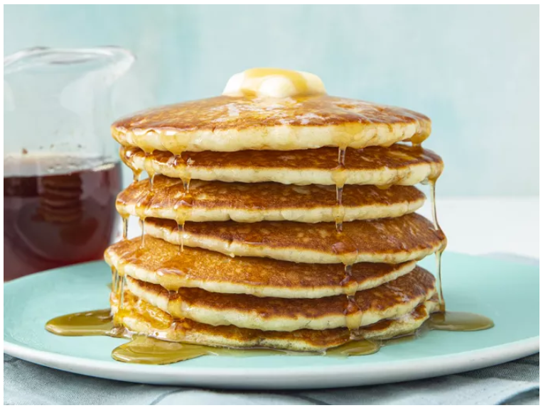

Odin Recipes
Home
Buttermilk Pancakes

Description
Buttermilk pancakes are an American classic breakfast food, but despite their unfussy ingredient list, too often
people grab for the box mix because it’s just “easier”. Too many home bakers have struggled with dense, flat, or
rubbery pancakes, or ones that have charred exteriors, raw centers, or are just all-around lacking in flavor.
Today we’re going to fix that with my favorite, fool-proof buttermilk pancake recipe.
While you’d be hard-pressed to find a truly complicated buttermilk pancake recipe, many recipes sadly leave out
important tips and tricks that can make or break your breakfast. Do you know the right time to flip? The right
heat for your stovetop? Which substitutions are acceptable and which definitely aren’t? How to make buttermilk
pancakes if you don’t even have buttermilk?
Ingredients
- 3 cups all-purpose flour
- 3 tablespoons white sugar
- 3 teaspoons baking powder
- 1 ½ teaspoons baking soda
- ¾ teaspoon salt
- 3 cups buttermilk
- ½ cup milk
- 3 large eggs
- ⅓ cup butter, melted
Steps
-
Combine flour, sugar, baking powder, baking soda, and salt in a large bowl. Beat buttermilk, milk, eggs, and
melted butter together in a separate bowl. Keep the two mixtures separate until you are ready to cook.
-
Heat a lightly oiled griddle or frying pan over medium-high heat. You can flick water across the surface and
if it beads up and sizzles, it's ready.
-
Pour the wet mixture into the dry mixture; use a wooden spoon or fork to mix until it's just blended
together. The batter will be a little lumpy which is what you want.
-
Pour or scoop batter onto the preheated griddle, using approximately 1/2 cup for each pancake. Cook until
bubbles appear on the surface, 1 to 2 minutes; flip with a spatula and cook until browned on the other side.
Repeat with remaining batter.
-
Serve hot and enjoy!